Tracefolio REPORTS & ISSUES
Tracefolio REPORTS & ISSUES식생 전체13예제 — 파스텔 숲·풍성한 경계·이끼 동상
완료모든 식생 예제의 따뜻한 파스텔 색과 후면 경계를 보강했습니다. 참고 숲은48그루·이끼 동상6개·하층 식생과 강물 반사로 채웠습니다.
작업 결과
독립11씬과 선택 Pixel Camera 통합2씬을 수정하고 전부 실제 Unity에서 실행·촬영했습니다. 따뜻한 숲과 실제 강물 반사를 유지하며 수호자·부엉이·토끼 형태의 이끼 동상을 추가했습니다.
변경 내용
적용 내용
기본 예제 후면에 나무20그루·관목42개·꽃220개·동상3개씩 추가했습니다. 접촉 통로와4개 프레임률 비교 구획의 원래 조건을 보존했습니다. 참고 숲은30→48그루,고사리160→260개,꽃72→136군락,이끼 동상6개이며 관목45개는 유지했습니다. 밝은 부분이 날아가던 첫 수정본을 보존하고 Bloom을0.85→0.42,threshold0.64→0.84,exposure1.03→0.91로 조정해 재촬영했습니다.
GIF는 변경 전→후를 각1.8초씩 보여주는 정지 비교입니다. 바람 동작 영상이 아닙니다.
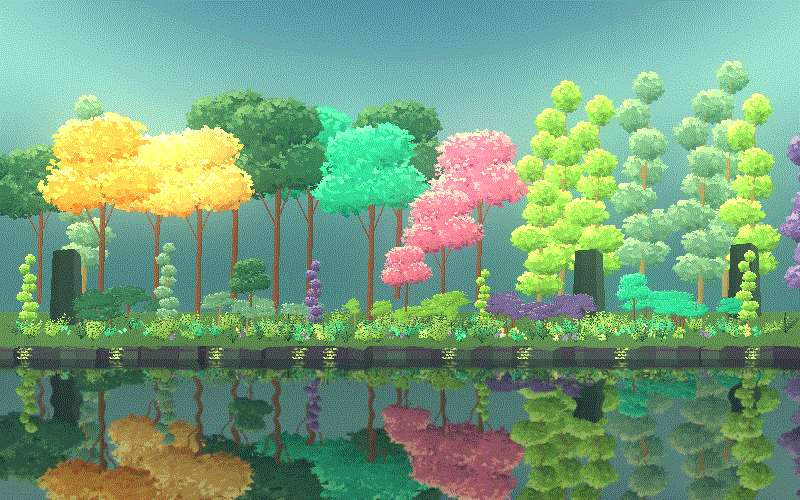
같은 숲의 Pixel Camera 미적용→360p 적용 비교입니다.
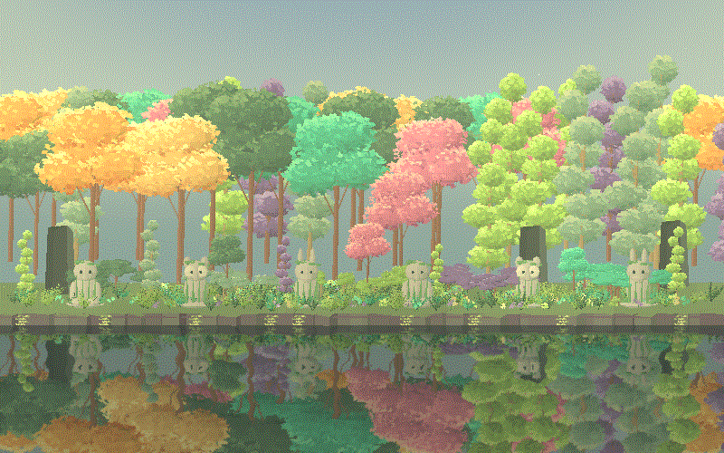
11-PixelCameraGarden
변경 전: 기존 배치와 색감입니다.
변경 후: 따뜻한 배경·재질과 추가 식생·동상을 확인합니다. 기존 효과에 따라 외곽선·제한 팔레트는 유지됩니다.
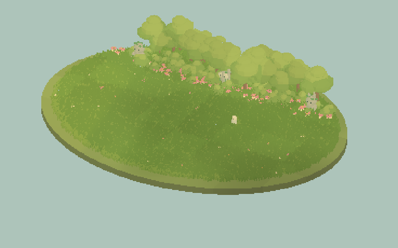
13-PixelCameraWoodland
변경 전: 기존 배치와 색감입니다.
변경 후: 따뜻한 배경·재질과 추가 식생·동상을 확인합니다. 기존 효과에 따라 외곽선·제한 팔레트는 유지됩니다.
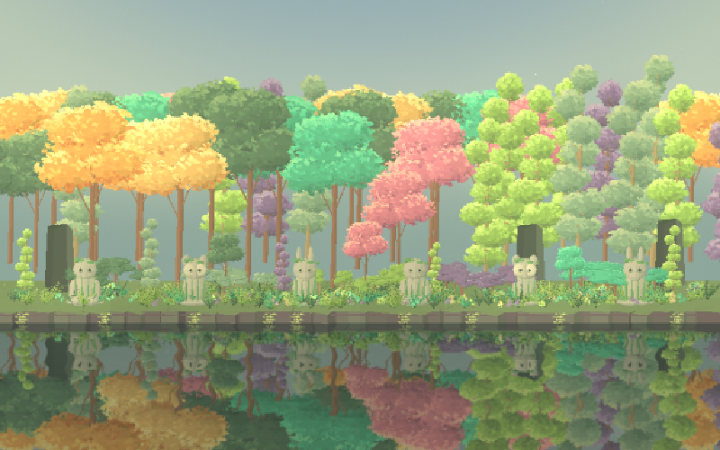
01-MeadowBreeze
변경 전: 기존 배치와 색감입니다.
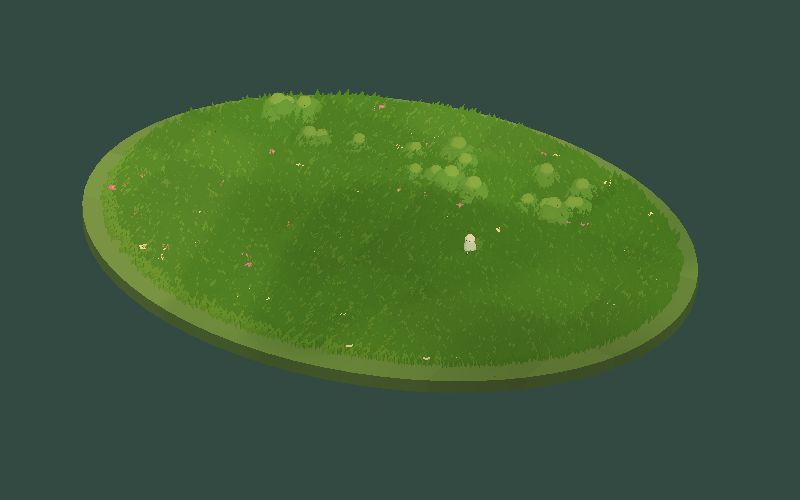
변경 후: 따뜻한 배경·재질과 추가 식생·동상을 확인합니다. 기존 효과에 따라 외곽선·제한 팔레트는 유지됩니다.
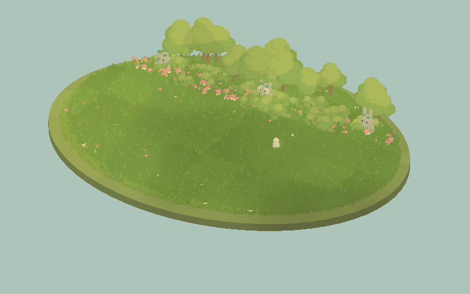
02-BlossomWalk
변경 전: 기존 배치와 색감입니다.
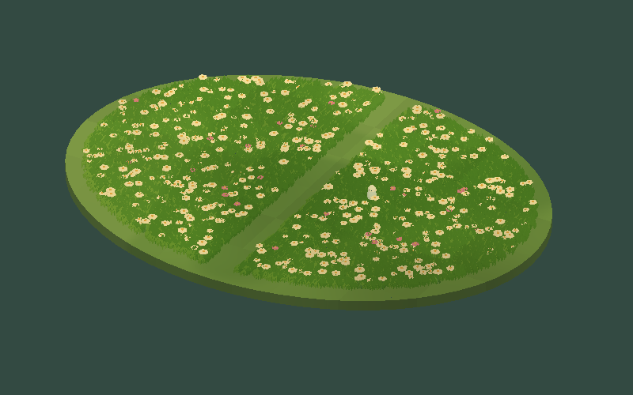
변경 후: 따뜻한 배경·재질과 추가 식생·동상을 확인합니다. 기존 효과에 따라 외곽선·제한 팔레트는 유지됩니다.
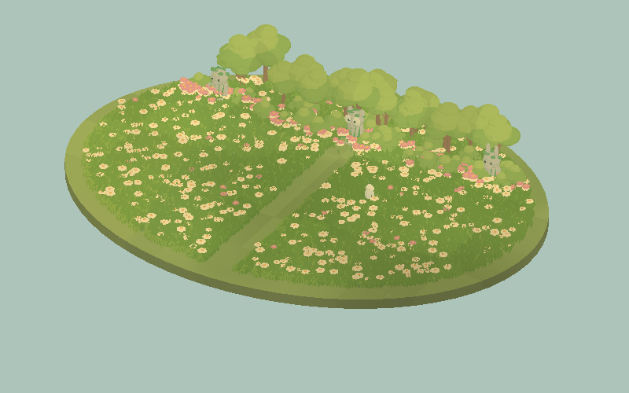
03-ShrubGarden
변경 전: 기존 배치와 색감입니다.
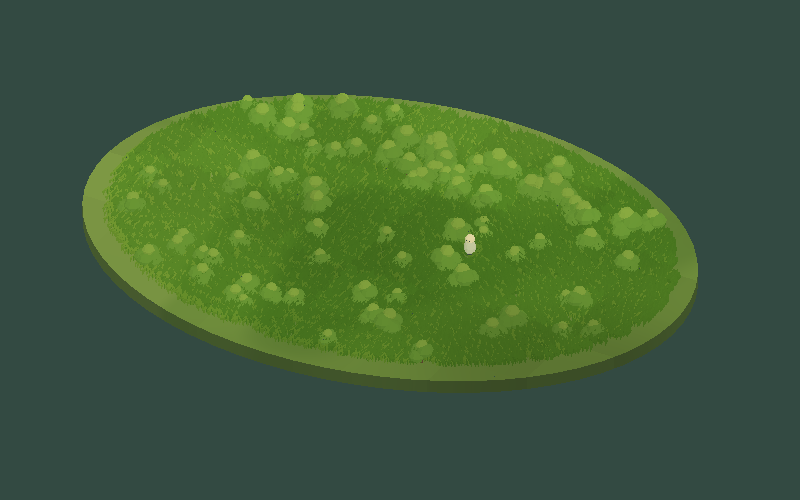
변경 후: 따뜻한 배경·재질과 추가 식생·동상을 확인합니다. 기존 효과에 따라 외곽선·제한 팔레트는 유지됩니다.
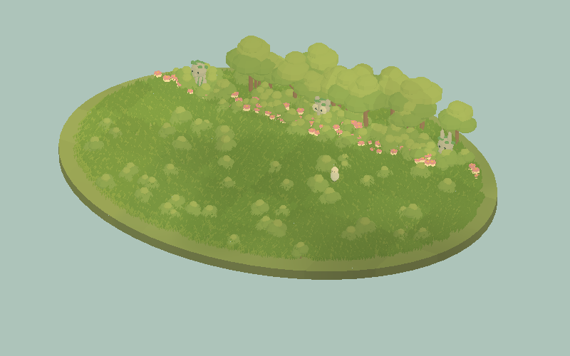
04-YoungWoodland
변경 전: 기존 배치와 색감입니다.
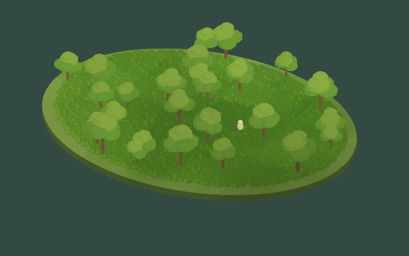
변경 후: 따뜻한 배경·재질과 추가 식생·동상을 확인합니다. 기존 효과에 따라 외곽선·제한 팔레트는 유지됩니다.
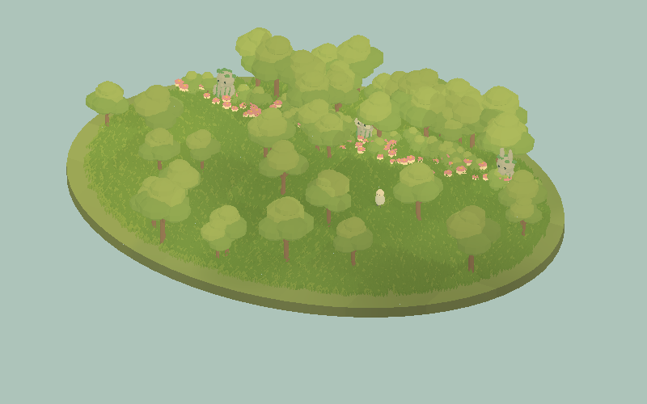
05-ContactTrail
변경 전: 기존 배치와 색감입니다.
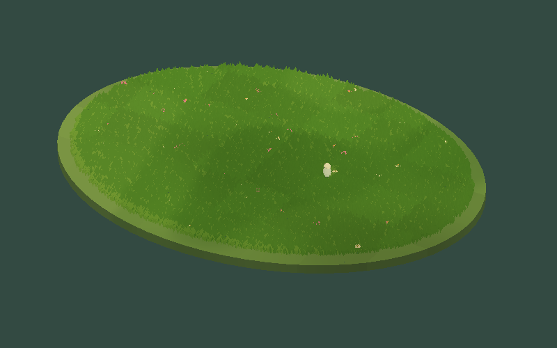
변경 후: 따뜻한 배경·재질과 추가 식생·동상을 확인합니다. 기존 효과에 따라 외곽선·제한 팔레트는 유지됩니다.
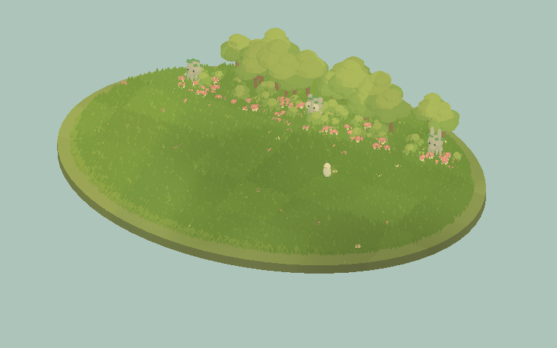
06-SteppedRhythm
변경 전: 기존 배치와 색감입니다.
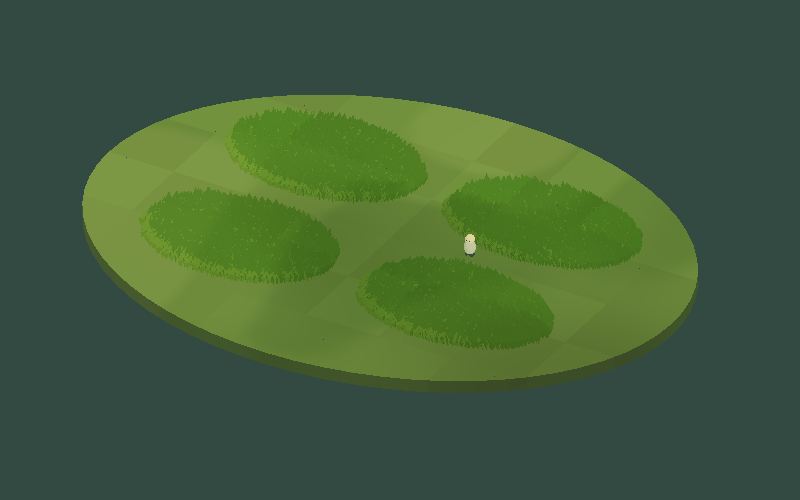
변경 후: 따뜻한 배경·재질과 추가 식생·동상을 확인합니다. 기존 효과에 따라 외곽선·제한 팔레트는 유지됩니다.
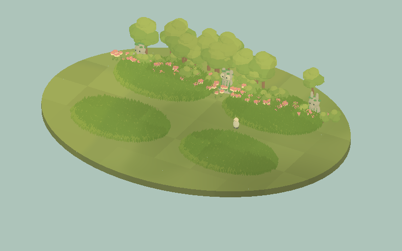
07-SharedGusts
변경 전: 기존 배치와 색감입니다.
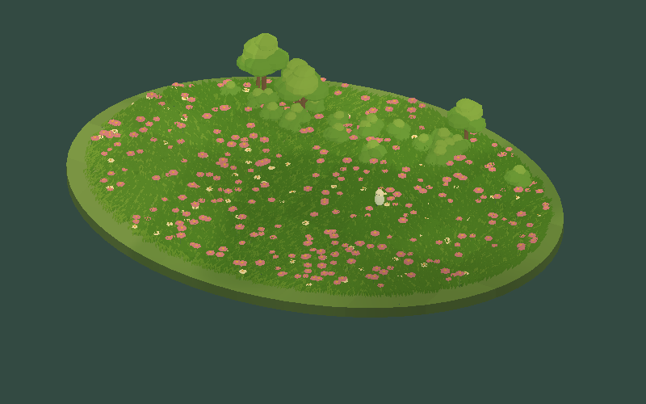
변경 후: 따뜻한 배경·재질과 추가 식생·동상을 확인합니다. 기존 효과에 따라 외곽선·제한 팔레트는 유지됩니다.
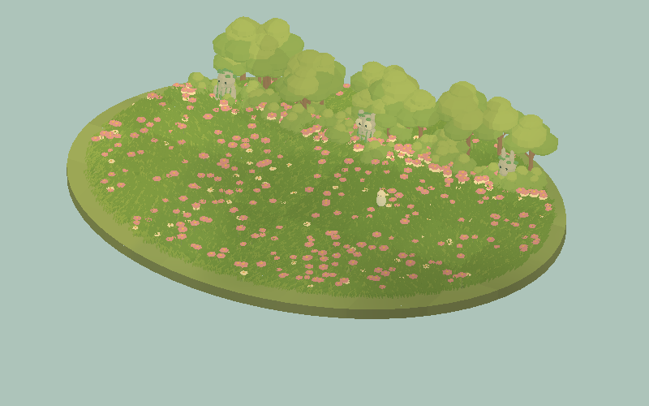
08-CloudLight
변경 전: 기존 배치와 색감입니다.
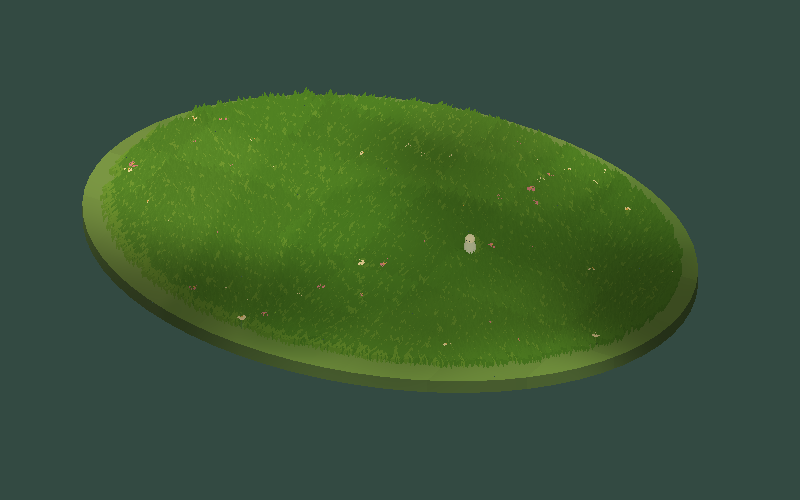
변경 후: 따뜻한 배경·재질과 추가 식생·동상을 확인합니다. 기존 효과에 따라 외곽선·제한 팔레트는 유지됩니다.
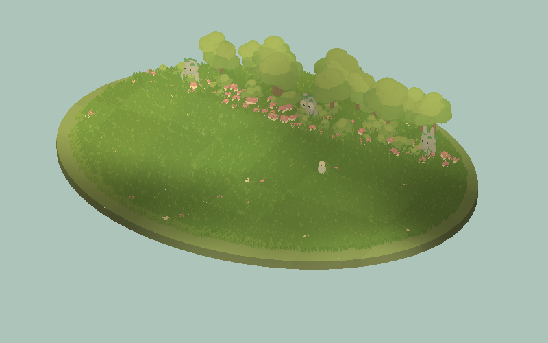
09-MixedGarden
변경 전: 기존 배치와 색감입니다.
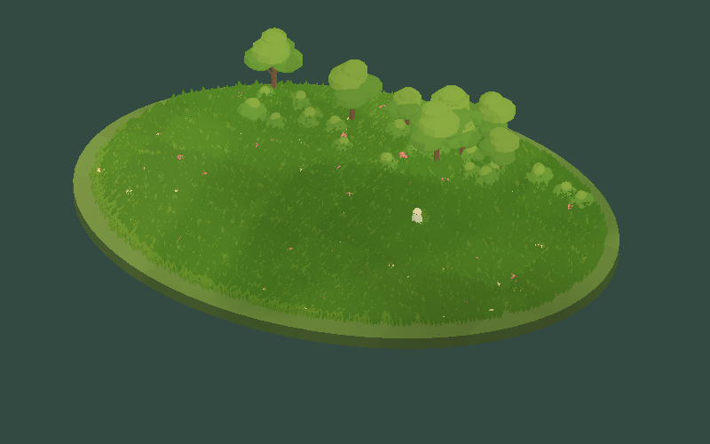
변경 후: 따뜻한 배경·재질과 추가 식생·동상을 확인합니다. 기존 효과에 따라 외곽선·제한 팔레트는 유지됩니다.
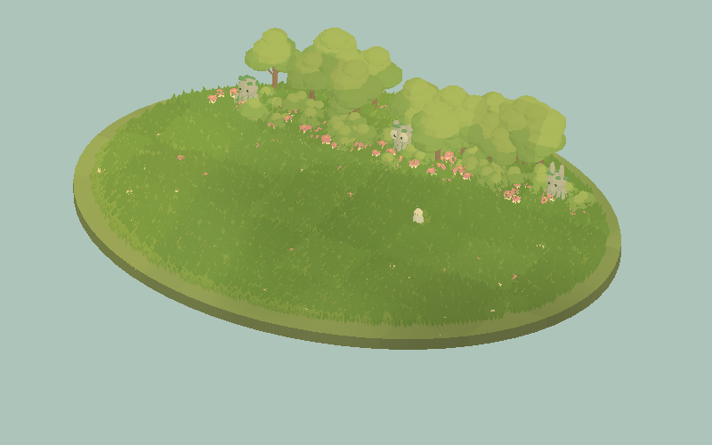
10-ExtensionGrove
변경 전: 기존 배치와 색감입니다.
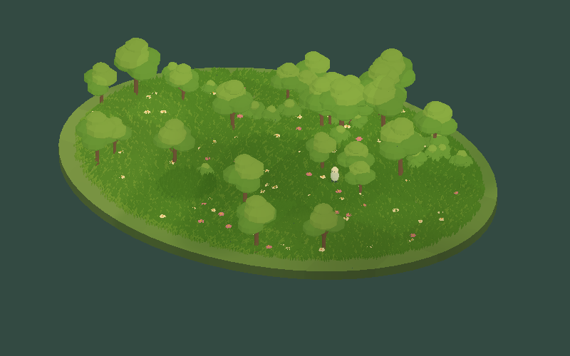
변경 후: 따뜻한 배경·재질과 추가 식생·동상을 확인합니다. 기존 효과에 따라 외곽선·제한 팔레트는 유지됩니다.
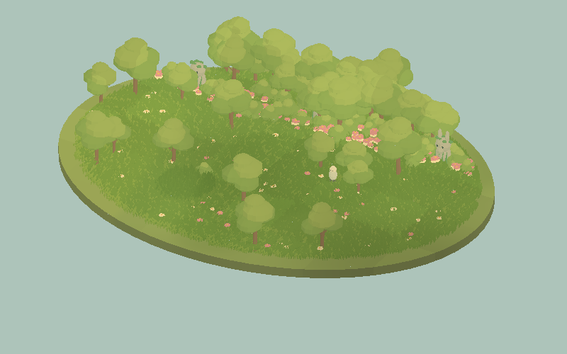
12-PrismaticWoodland
변경 전: 기존 배치와 색감입니다.
변경 후: 따뜻한 배경·재질과 추가 식생·동상을 확인합니다. 기존 효과에 따라 외곽선·제한 팔레트는 유지됩니다.

검증
Unity6000.0.83f1 Built-in,격리된 Play mode에서 Camera.Render로800×500 실제 PNG64개(32씬 전후)를 확보했습니다. 최종32화면은 개별 시각 검토했습니다. 첫 밝기 실패본은 로컬에 별도로 보존했습니다. 최종 실행 로그에서 CS컴파일·셰이더 오류·실행 예외가 검출되지 않았습니다. 원래 씬 ID·Transform·Camera·기능 컴포넌트·GUID·프로젝트 설정 보존 검사를 통과했습니다. Bloom의 명시적 변경은 보존 검사의 예외입니다. 렌더에 쓰인433개 소스가 최종 촬영 QA 프로젝트와 SHA256 일치했습니다. 식생6어셈블리 컴파일·12개 셰이더 진입점 컴파일·12개 에셋 검사를 통과했습니다.
전후의 애니메이션 시점은 약간 다를 수 있습니다. 동일 픽셀/완전히 동일한 실행 포즈 비교를 주장하지 않습니다. 에디터 UI 촬영이 아닌 실제 게임 카메라 화면입니다. 이미지 최적화: 원본 PNG 그대로 사용했으며 숲2장은200KB 목표보다 크지만 잎·수면 검증 세부를 보존했습니다. GIF는 ScreenToGif2.43.2 실제 인코더로 제작했습니다.
검토 패키지는 소스 고정 후 전체 재생성·아카이브 SHA256 대조했습니다.
PixelTooler-Foliage-Review.unitypackage: 479assets,10064563bytes,SHA256 e09ee0768c713411f2e39c676104895bf94578cc8123410493375408d553e605
PixoraStudio-Review.unitypackage: 2741assets,43700202bytes,SHA256 61af242fb8ea05b5ec13f2ec282fe37d096de0c138267131a7bf0e1654232617
남은 사항
이번 예제 수정·Built-in 실제 화면 검증은 완료했습니다. 원본 참고 이미지와 완전히 동일한 예술적 품질이라는 판정은 하지 않았습니다. 전체 제품 출시 승인·공식 Validator·샘플 제거 설치·9언어 실제 에디터 UI 전환·URP/플랫폼 성능 검증·Affinity 편집 원본 저장은 기존 미완료 작업으로 유지합니다. 나무·장식 증가로 렌더링 비용은 늘 수 있으며 경량화로 소개하지 않습니다. 수면 반사·Bloom은 Built-in 전용 샘플입니다. 교훈 검토: 과노출은 실제 렌더로 확인 후 수정했으며, 기존 실행/전후 검증 지침으로 충분하여 전역 지침 변경 없음.
작업 시간
- 제안 시간: 25~40분
- 실제로 완료된 시간: 실제 구현·전체 실행 검증 완료 확인:25분11초,2026-11-04 05:10:11 KST. 시작04:45:00 KST. 이후 보고서 공개 배포 확인 시간은 최종 채팅에 별도 기록합니다.
- XERJ: 사용 — XERJ Status와 OnRenderImage 검색을 실행했습니다. 관련 Runtime·셰이더·Python은 인덱스 범위 밖이므로 rg와 현재 소스 및 실제 Unity 렌더로 검증했습니다.